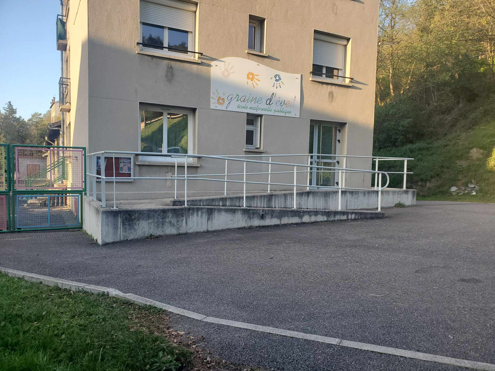
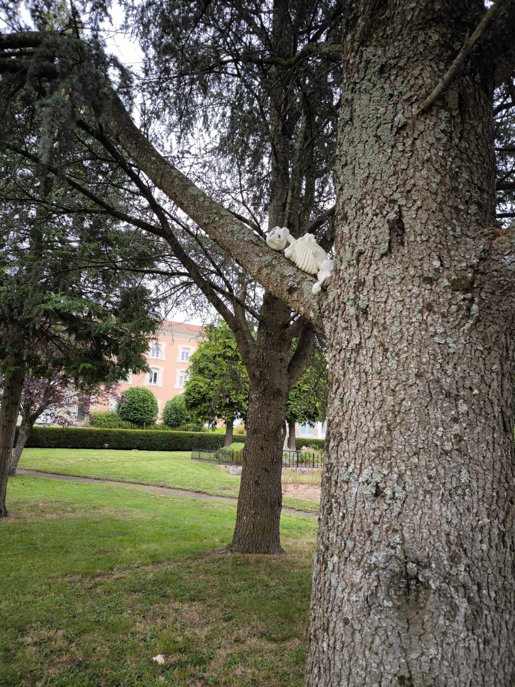

H a l l o w e e n


Bonjour, je m'appelle Oscar ! Suivez les étapes, et je vous guiderai jusqu'à la récompense. Mais attention… chaque étape a son mystère. Prêt à frissonner ?
🧙â€â™€ï¸ğŸ‘»ğŸ”„🾠Je me cache parmi les détraqueurs suspendus. Approchez, mais doucement… Peut-être que l'un d'eux bougera soudainement !
💡🎥👦👧 Les ombres ici sont grandes et inquiétantes… !
🕸️🧙‍♀️🏚️ Je sens des toiles d’araignée et un souffle glacé… Regardez bien, peut-être qu'une sorcière se cache pour vous surprendre !
👁️💀🎃 Les chasseurs disparus vous observent… et moi aussi ! Suivez les yeux lumineux sans vous égarer dans l’obscurité
⚰️🚏🏚️ J’attends le train depuis 1881… mais il n’est jamais arrivé.
👧🧸ğŸ Ah, la balançoire… elle grince comme si quelqu’un s’y balançait encore.
🌲😱🪢 Plus loin, il aperçoit des silhouettes enroulées et suspendues aux arbres, comme des cadavres empaquetés. Les branches craquent et une odeur étrange envahit l’air, comme si les âmes de ces défunts veillaient sur le lieu.
🏫🚪💀 En sortant de l'école, Oscar tombe sur un cadavre étendu dans l'herbe, son visage figé dans une expression de terreur. Une légende raconte qu'il s'agit d'un ancien concierge de l'école, disparu après une nuit d'Halloween.
🛑ğŸğŸ—¡ï¸ Les têtes sur le portail chuchotent des secrets…
🌲👻🌬️ Les fantômes ici aiment jouer dans les arbres… Si vous passez sans bruit, ils pourraient vous montrer le chemin.
🏚️👋🕯️ e vois des mains étranges aux fenêtres. Peut-être qu'elles vous feront signe...
👁️👀🏚️ Les yeux sur les volets semblent me connaître… Regardez bien, peut-être qu’ils vous guideront vers la prochaine étape.
⚰️🔖🪦 Les pierres tombales ici racontent des histoires…
🔎👣🚨 On dit qu’un crime s’est déroulé ici…
🐦👶🧺 Les petits êtres enfermés dans leurs cages vous observent… Passez vite, mais ne les oubliez pas
👰💀🩠La Dame Blanche est là , veillant sur la fin de votre aventure… Approchez sans crainte, elle protège la récompense que vous cherchez !
Félicitations! Courez nous rejoindre
Vous voulez devenir bénévoles